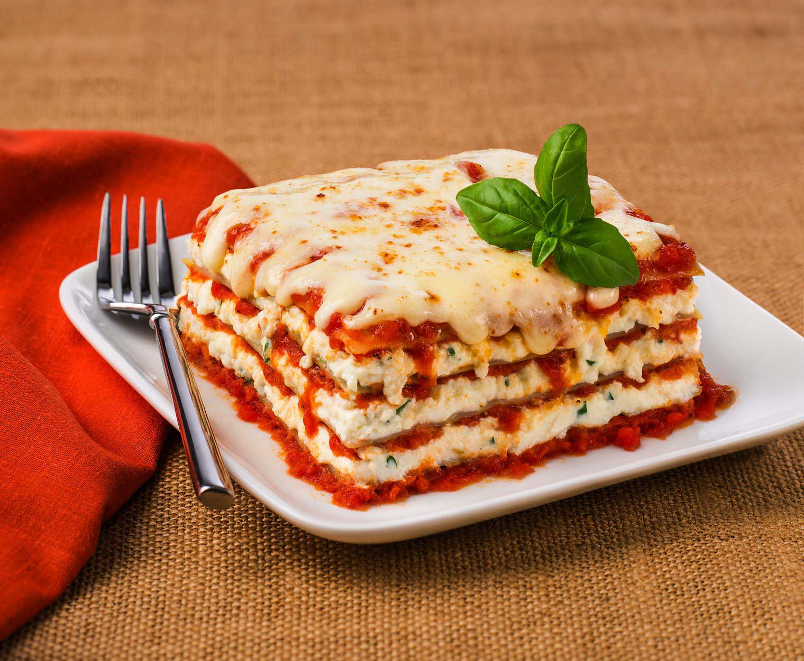

Cheese Lasagna

This lasagna recipe is an easy vegetarian lasagna with ricotta, mozzarella, and Parmesan cheeses.
Ingredients
- lasagna noodles
- ricotta cheese
- eggs
- grated Parmesan cheese
- salt and pepper
- olive oil
- garlic, minced
- spaghetti sauce
- Italian seasoning
- shredded mozzarella cheese
Steps
- Preheat the oven to 350 degrees F (175 degrees C)
- Bring a large pot of lightly salted water to a boil. Add lasagna noodles and cook for 8 to 10 minutes;
drain and lay noodles flat on foil to cool.
- Mix ricotta, eggs, Parmesan cheese, salt, and pepper together in a bowl; mix well.
- Heat oil in a medium saucepan over medium heat; add garlic and sauté 2 minutes.
Stir in spaghetti sauce and Italian seasoning until warmed through, stirring occasionally, 2 to 5 minutes.
- Spread 1/2 cup of sauce on the bottom of a 9x13-inch baking dish.
Cover with a layer of noodles. Spread 1/2 of the ricotta mixture over noodles; top with another layer of noodles.
Pour 1 1/2 cups of sauce over noodles and spread the remaining ricotta over the sauce.
Top with remaining noodles and sauce; sprinkle with remaining mozzarella. Cover with a greased sheet of foil.
- Bake in the preheated oven until the cheese is melted and bubbly, about 45 minutes.
You may also like some lasagna-stuffed-shell recipe or the simple-meat-lasagna recipe.
Return to Homepage